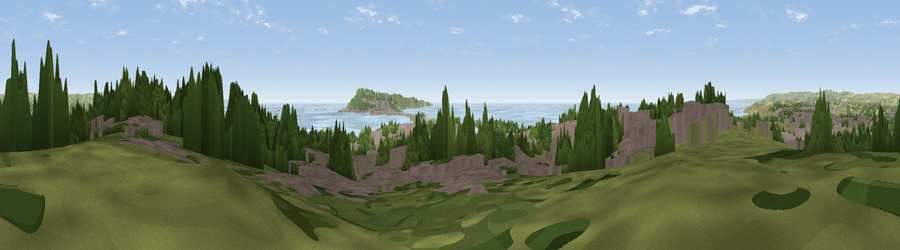

Viewpoint near Wyke Regis
#9581 in England · top 28% of its area beats it · near Wyke RegisThe view, rendered

A 360° render of this exact spot computed from the terrain model, tree cover and land cover — summer colours, afternoon light, calibrated against photographs of famous viewpoints. Real trees, hedges and buildings will differ in detail.
The panorama
Grey silhouette: terrain skyline in each direction (720 bearings, Earth curvature and refraction included). Dashed green: skyline with trees (+15 m) and buildings (+8 m) as obstacles. Blue strip: how far the ground is visible on each bearing.
Where the view opens
Wedge length = distance to the farthest visible ground on that bearing (vegetation-aware). Rings at 10, 25 and 50 km.
What fills the view
35% built-up · 24% water · 20% woodland · 18% grassland · 2% cropland · 1% bare ground
Angular shares of the visible panorama (visual magnitude), not map area. Landscape diversity 0.64 (0–1 Shannon).
Key numbers
More beautiful places nearby
The staircase of upgrades: each row has a higher view potential than everything closer. Driving times are estimates from straight-line distance, calibrated against real road routing — check an actual route before setting out.
| Place | Direction | Drive | Score |
|---|---|---|---|
| Viewpoint near Wyke Regis | W · 1 km | ~4 min | 64.9 |
| Viewpoint near Fleet | NW · 5 km | ~10 min | 71.0 |
| Viewpoint near Fleet | WNW · 5 km | ~11 min | 71.6 |
| Viewpoint near Castletown | SE · 5 km | ~11 min | 81.2 |
| Viewpoint near Chaldon Herring | ENE · 11 km | ~21 min | 82.9 |
| Viewpoint near Chaldon Herring | ENE · 11 km | ~21 min | 83.5 |
| Viewpoint near Chaldon Herring | ENE · 12 km | ~23 min | 83.8 |
| Viewpoint near Abbotsbury | NW · 13 km | ~24 min | 85.1 |
50.59962, -2.47629 · source: screening · position refined by local search. Computed location — check access rights before visiting.